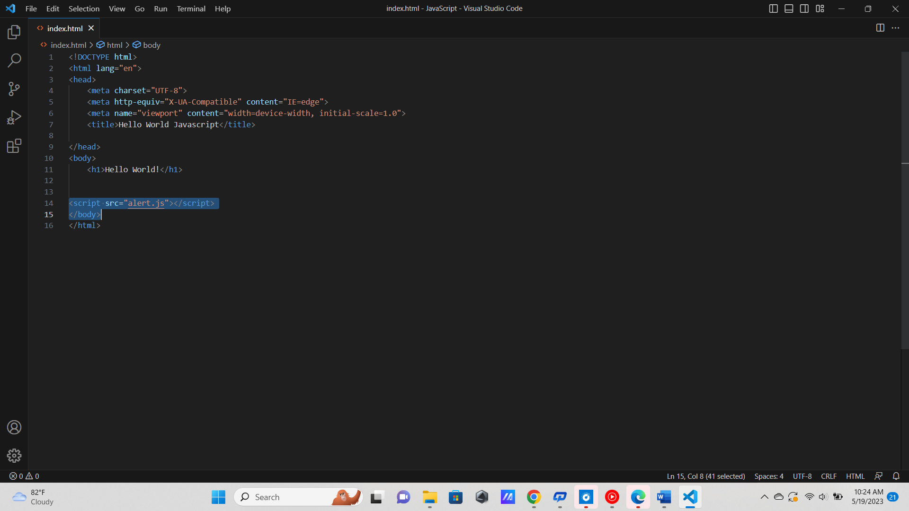
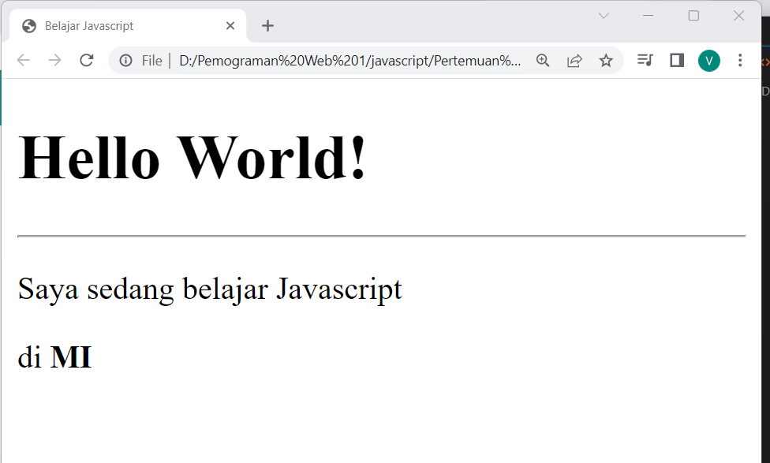
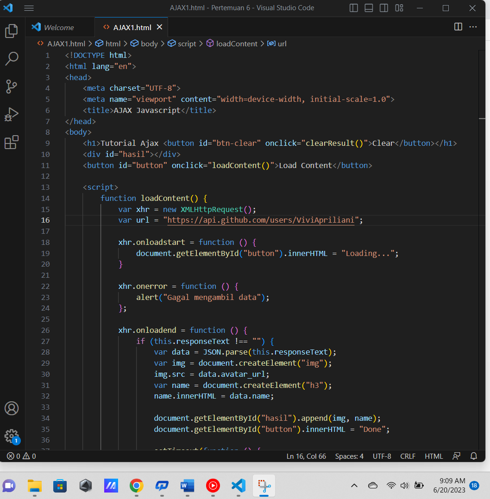

Javascript

Sejarah Javascript
Javascript awalnya bernama Mocha, lalu berubah menjadi LiveScript saat browser Netscape Navigator 2.0 rilis versi beta (September 1995). Namun, setelah itu dinamai ulang menjadi Javascript. Terinspirasi dari kesuksesan Javascript, Microsoft mengadopsi teknologi serupa. Microsoft membuat 'Javascript' versi mereka sendiri bernama JScript. Lalu ditanam pada internet Explorer 3.0. Hal ini mengakibatkan 'Perang Browser' karena JScript milik Microsoft berbeda dengan Javascript racikan Netscape. Akhirnya pada tahun 1996, Netscape mengirimkan standarisasi ECMA-262 ke Ecma International. Sehingga lahirlah standarisasi kode Javascript bernama ECMAScript atau ES. ECMAScript, atau secara formal disebut ECMAScript -262. 1 tahun berikutnya, badan standarisasi ISO (International Organization for Standardization) juga mengadopsi ECMAScript sebagai standar. Sejak saat itu, semua web browser menjadikan ECMAScript sebagai standar acuan untuk JavaScript.ECMAScript terus dikembangkan hingga saat ini ECMAScript sudah mencapai versi 12 (ES12), berikut perkembangan ECMAScript menurut versi dan tahunnya

Apa Saja Peralatan yang Diperlukan untuk Belajar Javascript ?
Peralatan yang kita perlukan untuk belajar Javascript untuk pemula tidak lah banyak yaitu Web Browser
(Google Chrome, Firefox, Opera, dll ) dan Teks Editor (VS Code, Sublime Text, Notepad, dll)
Console Javascript terdapat pada Browser , bisa kita akses dengan mudah dengan cara:
-
Console Javascript terdapat pada Browser , bisa kita akses dengan mudah dengan cara:
Pertama buka Web Browser (disini saya menggunakan google Chrome sebagai contoh) lalu
klik tanda titik tiga dipojok kanan atas > Pilih More Tools.
-
Selanjutnya pilih Developer Tools atau bisa dengan menekan Ctrl + Shift + l
-
Dan seperti ini tampilan Console Javascript pada Google Chrome.
-
Selanjutnya, kita bisa menulis fungsi atau kode-kode Javascript dan hasilnya akan langsung
ditampilkan pada console contohnya bisa dilihat dibawah ini.
Pada console diatas bisa dilihat ada kode console.log("Hi apa kabar!"); yang berfungsi untuk menampilkan tulisan Hi apa kabar ! pada console dan kode alert ("Saya sedang belajar Javascript"); berfungsi untuk menampilkan tulisan Saya sedang belajar Javascript dalam bentuk pesan pop up dibagian halaman browser kita Setelah mencoba Console Javascript, maka dapat kita simpulkan bahwa Console bisa digunakan untuk menguji coba fungsi atau kode Javascript dan Console juga dapat kita gunakan untuk melihat pesan error saat debugging program.
Cara Penulisan Kode Javascript
Ada Empat cara penulisan kode javascript yaitu :
-
Penulisan Javascript pada tag script
Penulisan kode Javascript menggunakan tag script atau disebut dengan embed adalah cara umum yang digunakan. Tag script dapat kita buat di dalam tag head maupun body. Contoh:
-
Penulisan Javascript pada File Eksternal
Cara kedua, kita bisa menulis Javascript di File yang terpisah dengan HTML.Biasanya digunakan jika kita tidak ingin kode Javascript bercampur dengan kode HTML.
 -
Penulisan Javascript pada atribut
Penulisan Javascript pada atribut biasanya dilakukan pada atribut event.
Contoh:
-
Penulisan Javascript pada URL
Nah ini yang menurut saya cara yang cukup aneh.Cara ini memang jarang digunakan dan hampir tidak ada yang menggunakannya di dalam aplikasi.Tapi tetap bisa.Caranya, pada URL kita gunakan javascript: lalu diikuti dengan kode Javascript yang ingin dieksekusi.
Cara Menampilkan Output Pada JavaScript
Output adalah sebuah tampilan program yang biasanya digunakan untuk memperlihatkan hasil akhir. Dalam Javascript ada 4 cara menampilkan output yaitu fungsi console.log(), fungsi alert(), fungsi document.write(), dan fungsi innerHTML namun dari keempat fungsi tersebut memiliki perbedaan disetiap fungsinya berikut adalah penjelasannya :
-
Fungsi console.log()
Fungsi console.log() adalah fungsi untuk menampilkan teks ke console Javascript. Fungsi console.log() biasanya digunakan untuk debugging. Karena setiap pesan error di Javascript selalu ditampilkan di dalam Console. Selain console.log(), terdapat juga beberapa fungsi untuk debugging seperti console.debug(), console.info(), console.error(), console.dir(), dsb. Berikut adalah contoh output nya : -
Fungsi alert()
Fungsi alert() adalah fungsi untuk menampilkan jendela dialog. Fungsi sebenarnya berada pada objek window. Berikut contoh output nya : -
Fungsi write()
Objek document adalah objek yang mewakili dokumen HTML di dalam Javascript. Dalam objek document, terdapat fungsi write() untuk menulis sesuatu ke dokumen HTML.Berikut contoh outputnya : -
Fungsi innerHTML
innerHTML adalah sebuah atribut di dalam (objek) elemen HTML yang berisi string HTML, dengan innerHTML, kita dapat menampilkan output ke elemen yang lebih spesifik.Berikut contoh penulisannya :
Memahami Variable dan Tipe Data dalam Javascript
-
Variable
Variable adalah sebuah nama yang mewakili sebuah nilai. Variable bisa diisi dengan berbagai macam nilai seperti string (teks), number (angka), objek, array, dan sebagainya. Kita bisa ibaratkan, Variable itu seperti wadah untuk menyimpan sesuatu. Aturan Penulisan Variable. Ada beberapa aturan penulisan variabel dalam Javascript:- Penamaan variabel tidak boleh menggunakan angka di depannya.
- Penamaan variabel boleh menggunakan awal underscore.
- Penamaan variabel dianjurkan menggunakan camelCase apabila terdiri dari dua suku kata (contoh : var fullName = “Vivi Apriliani”);
- Penamaan variabel dianjurkan menggunkan bahasa inggris.
-
Tipe Data
Tipe data adalah jenis-jenis data yang bisa kita simpan di dalam variabel. Ada beberapa tipe data dalam pemrograman Javascript:- String (teks)
- Integer atau Number (bilangan bulat)
- Float (bilangan Pecahan)
- Boolean
- Object
Javascript adalah bahasa yang bersifat dynamic typing, artinya kita tidak harus menuliskan tipe data pada saat pembuatan variabel seperti pada bahasa C, C++, Java, dsb. yang bersifat static typing. Javascript akan otomatis mengenali tipe data yang kita berikan pada variabel. Hal ini bisa juga kita cek dengan kata kunci typeof.
3 Macam Jendela Dialog pada Javascript
Jendela dialog merupakan jendela yang digunakan untuk berinteraksi dengan pengguna.Ada tiga macam jendela dialog pada Javascript: Jendela dialog alert(), Jendela dialog confirm(), Jendela dialog promp(); Ketiga dialog ini memiliki fungsi dan manfaat yang berbeda-beda, mari kita bahas :
-
Jendela Dialog Alert()
Dialog alert() biasanya digunakan untuk menampilkan sebuah pesan peringatan atau informasi. Fungsi alert() berada dalam objek window.Karena objek window berisfat global, kita boleh tidak menulisnya. Dialog alert() tidak akan mengembalikan nilai apa-apa saat dieksekusi. Dialog alert() memiliki satu perameter yang harus diberikan, yaitu: teks yang akan ditampilkan pada dialog. Pertanyaanya: Bagaimana cara menampilkan dialog alert() pada event tertentu, misalnya saat sebuah tombol diklik Ini bisa kita lakukan dengan menambahkan fungsi dialog pada event listener. Pada HTML, kita bisa masukan fungsi alert() pada atribut onClick agar nanti ditampilkan saat sebuah elemen diklik. -
Jendela Dialog confirm()
Dialog confirm() digunakan untuk melakukan konfirmasi dalam melakukan tindakan tertentu. Misalnya: Saat kita menghapus sesuatu, maka ada baiknya menampilkan dialog confirm(). Karena tindakan tersebut cukup berbahaya. Dialog confirm dapat dibuat dengan fungsi confirm(). Dialog confirm() akan mengembalikan nilai true apabila kita memilih tombol OK dan akan mengembalikan nilai false apabila kita memilih Cancel.Nilai kembalian ini dapat kita tampung dalam variabel untuk diproses. -
Jendela Dialog Prompt()
Dialog prompt() berfungsi untuk mengambil sebuah inputan dari pengguna. Dialog prompt() akan mengembalikan sebuah nilai string dari apa yang diinputkan oleh pengguna. Dialog prompt() memiliki beberapa parameter yang harus diberikan:- Teks yang akan ditampilkan pada form.
- Nilai default untuk field input.
Enam Jenis Operator yang Wajib Diketahui
Operator adalah simbol yang digunakan untuk melakukan operasi pada suatu nilai dan variabel.Operator dalam pemrograman terbagi dalam 6 jenis:
-
Operator aritmatika
Operator aritmatika merupakan operator untuk melakukan operasi aritmatika seperti penjumlahan, pengurangan, pembagian, perkalian, dsb. Berikut contoh penggunaannya: -
Operator Penugasan (Assignment)
Operator penugasan adalah operator yang digunakan untuk memberikan tugas kepada variabel. Biasanya digunakan untuk mengisi variabel. Apa bedanya dengan operator penugasan dengan operator aritmatika? Operator aritmatika hanya melakukan operasi aritmatika saja, sedangkan operator penugasan… ia melakukan operasi aritmatika dan juga pengisian. Berikut contoh penggunaannya: -
Operator relasi atau perbandingan
Operator relasi atau perbandingan adalah operator yang digunakan untuk membandingkan dua nilai.Operator perbandingan akan menghasilkan sebuah nilai boolean true dan false. Berikut contoh penggunaannya: -
Operator Logika
Operator logika digunakan untuk melakukan operasi terhadap dua nilai boolean. Berikut contoh penggunaannya: -
Operator Bitwise
Operator bitwise merupkan operator yang digunakan untuk operasi berdasarkan bit (biner), operator ini berlaku untuk tipe data int, long, short, char, dan byte. Operator ini akan menghitung dari bit ke bit. Konsepnya memang hampir sama dengan opeartor Logika. Bedanya, Bitwise digunakan untuk biner. Berikut contoh penggunaannya: -
Operator Ternary
Operator ternary merupakan operator yang teridiri dari tiga bagian. Operator-operator sebelumnya hanya dua bagian saja, yaitu: bagian kiri dan kanan. Ini disebut operator binary. Sementara operator trinary ada bagian kiri, tengah, dan kanan Opertor ternary pada Javascript, biasanya digunakan untuk membuat sebuah percabangan if/else. Simbol opertor ternary terdiri dari tanda tanya dan titik dua (?:).Perhatikan!dapat kita isi dengan ekspresi yang menghasilkan nilai true dan false. Apabila kondisi bernilai true, maka "benar" yang akan dipilih dan sebaliknya—apabila false—maka "salah" yang akan dipilih. Berikut contoh penggunaannya:
Memahami 6 Bentuk Percabangan pada Javascript
Percabangan adalah cara yang digunakan dalam program untuk mengambil keputusan ke satu kemungkinan True atau False dari beberapa kondisi. Selain percabangan, struktur ini juga disebut : Control Flow, Decision, struktur kondisi, struktur if, dsb. Percabangan akan mapu membuat program berpikir dan menentukan Tindakan sesuai dengan logika/kondisi yang kita berikan.
-
Percabangan if
Percabangan if merupakan percabangan yang hanya memiliki satu blok pilihan saat kondisi bernilai benar. Berikut contoh penggunaannya : -
Percabangan if/else
Percabangan if/else merupakan percabangan yang memiliki dua blok pilihan. Pilihan pertama untuk kondisi benar, dan pilihan kedua untuk kondisi salah (else). Berikut contoh penggunaannya :
-
Percabangan if/else/if
Percabangan if/else/if merupakan percabangan yang memiliki lebih dari dua blok pilihan Berikut contoh penggunaannya : -
Percabangan switch/case
Percabangan switch/case adalah bentuk lain dari percabangan if/else/if. Kita dapat mermbuat blok kode (case) sebanyak yang diinginkan di dalam blok switch. Pada, kita bisa isi dengan nilai yang nanti akan dibandingkan dengan varabel. Setiap case harus diakhiri dengan break. Khusus untuk default, tidak perlu diakhiri dengan break karena dia terletak di bagian akhir. Pemberian break bertujuan agar program berhenti mengecek Berikut contoh penggunaannya : 
-
Percabangan dengan Operator Ternary
Percabangan menggunakan opreator ternary merupakan bentuk lain dari percabangan if/else. Bisa dibilang: bentuk singkatnya dari if/else. Operator ternary berperan sebagai percabangan if/else. Berikut contoh penggunaannya : -
Percabangan Bersarang(Nested)
Kita juga dapat membuat blok percabangan di dalam percabangan. Ini disebut percabangan bersarng atau nested if. Berikut contoh penggunaannya :
Mengenal 5 Macam Bentuk Perulangan pada Javascript
Perulangan adalah proses mengulang-ulang eksekusi blok kode tanpa henti, selama kondisi yang dijadikan acuan terpenuhi. Secara umum, perulangan dibagi dua yaitu :Counted Loop dan Uncounted Loop
- Perulangan yang termasuk dalam Counted Loop :
- Perulangan For
Perulangan for merupakan perulangan yang termasuk dalam couted loop, karena sudah jelas berapa kali ia akan mengulang. Berikut contoh penulisan kode nya : - Perulangan Foreach
Perulangan foreach biasanya digunakan untuk mencetak item di dalam array. Perulangan ini termasuk dalam perulangan counted loop, karena jumlah perulangannya akan dituentukan oleh panjang dari array. Ada dua cara menggunakan perulangan foreach di Javascript:- Menggunakan for dengan operator in.
- Mengguunakan method forEach().

- Perulangan Repeat
Perulangan dengen method atau fungsi repeat() termasuk dalam perulangan counted loop. Fungsi ini khusus digunakan untuk mengulang sebuah teks (string). Bisa dibilang: ini merupakan singkat dari perulangan for. Berikut contoh penulisan kode nya :- Contoh apabila menggunakan perulangan for :

- Contoh apabila menggunakan fungsi repeat()
- Contoh apabila menggunakan perulangan for :
- Perulangan yang termasuk dalam Uncounted loop :
- Perulangan While
Perulangan while merupakan perulangan yang termasuk dalam perulangan uncounted loop. Perulangan while juga dapat menjadi perulangan yang counted loop dengan memberikan counter di dalamnya. Berikut contoh untuk memahami perulangan ini…Perulangan while juga dapat menjadi perulangan yang counted loop dengan memberikan counter di dalamnya. - Perulangan Do/While
Perulangan do/while sama seperti perulangan while. Perbedaanya: perulangan do/while akan melakukan perulangan sebanyak 1 kali terlebih dahulu, lalu mengecek kondisi yang ada di dalam kurung while. Bentuknya seperti ini:Jadi perbedaanya: Perulangan do/while akan mengecek kondisi di belakang (sesudah mengulang), sedangkan while akan mencek kondisi di depan atau awal (sebelum mengulang).
Memahami Struktur Data Array pada Javascript
Array adalah kumpulan data yang disimpan dalam satu variable, array dapat diilustrasikan seperti gerbong kereta. Indeks array dapat diilustrasikan sebagai nomor gerbong. Pada javascript, array dapat kita buat dengan tanda kurung siku ([..]). Kita bisa mengisi data ke dalam array, lalu setiap data dipisah dengan tanda koma (,). karena javascript merupakan bahasa pemrograman yang dynamic typing maka kita bisa menyimpan dan mencampur apapun di dalam array Array akan menyimpan sekumpulan data dan memberinya nomer indeks agar mudah diakses. Indeks array selalu dimulai dari nol 0. Ada dua cara yang bisa dilakukan untuk menambah data ke dalam array:
- Mengisi menggunakan indeks;
- Mengisi menggunakan method push().
Tapi kekurangan dari cara ini ialah: Kita harus tahu jumlah data atau panjang array-nya, barulah kita bisa menambahkan. Apabila kita memasukan nomer indeks sembarangan, maka nanti yang akan terjadi adalah data yang ada di daalam indeks tersebut akan ditindih. Terdapat beberapa method dalam Array yang perlu kita ketahui:
- Method filter()
Method filter() berfungsi untuk menyaring data dari array. Parameter yang harus diberikan pada method filter() sama seperti method forEach(), yaitu: sebuah fungsi callback. Contoh: -
Method includes()
Method ini berfungsi untuk mengecek apakah sebuah data ada di dalam array atau tidak. Biasanya digunakan untuk melakukan pencarian untuk memastikan data sudah ada di dalam array. Contoh : -
Method sort()
Method sort() berfungsi untuk mengurutkan data pada array. Contoh :
Apa itu DOM API? dan Bagaimana Cara Menggunakanya?
DOM merupakan singkatan dari Document Object Model. Artinya, dokumen (HTML) yang dimodelkan dalam sebuah objek. Objek dari dokumen ini menyediakan sekumpulan fungsi dan atribut/data yang bisa kita manfaatkan dalam membuat program Javascript. Inilah yang disebut API (Application Programming Interface). DOM tidak hanya untuk dokumen HTML saja. DOM juga bisa digunakan untuk dokumen XML dan SVG dan DOM juga tidak hanya ada di Javascript saja, DOM juga ada pada bahasa pemrograman lain. Seperti yang kita sudah ketahui, DOM adalah sebuah objek untuk memodelkan dokumen HTML. Objek DOM di javascript bernama document. Objek ini berisi segala hal yang kita butuhkan untuk memanipulasi HTML.Jika kita coba ketik document pada console Javascript, maka yang akan tampil adalah kode HTML.
Di dalam objek document, terdapat fungsi-fungsi dan atribut yang bisa kita gunakan untuk memanipulasi dokumen HTML. Sebagai contoh fungsi documen.write(). Fungsi ini digunakan untuk menulis sesuatu ke dokumen HTML Contoh: Coba ketik kode berikut di dalam console Javascript.
Hasilnya :
Apabila kita ingin mengakses elemen yang spesifik, terdapat beberapa fungsi yang bisa digunakan:
- getElementById() fungsi untuk memilih elemen berdasarkan atribut id.
- getElementByName() fungsi untuk memilih elemen berdasarkan atribut name.
- getElementByClassName() fungsi untuk memilih elemen berdasarkan atribut class.
- getElementByTagName() fungsi untuk memilih elemen berdasarkan nama tag.
- getElementByTagNameNS() fungsi untuk memilih elemen berdasarkan nama tag.
- querySelector() fungsi untuk memilih elemen berdasarkan query.
- querySelectorAll() fungsi untuk memilih elemen berdasarkan query.
Memahami Fungsi di Javascript
Fungsi adalah sub-program yang bisa digunakan kembali baik di dalam program itu sendiri, maupun di program yang lain. Fungsi di dalam Javascript adalah sebuah objek. Karena memiliki properti dan juga method. Ada 4 cara yang bisa kita lakukan untuk membuat fungsi di Javascript:
- Menggunakan cara biasa
Cara ini adalah cara yang paling sering digunakan, terutama buat para pemula Contoh : -
Menggunakan ekspresi
Contoh :Kita menggunakan variabel, lalu diisi dengan fungsi. Fungsi ini sebenarnya adalah fungsi anonim (anonymous function) atau fungsi tanpa nama. -
Menggunakan tanda panah (=>)
Cara ini sering digunakan di kode Javascript masa kini, karena lebih sederhana. Akan tetapi sulit dipahami bagi pemula. Fungsi ini mulai muncul pada standar ES6. Contoh:
Sebenarnya hampir sama dengan yang menggunakan ekspresi. Bedanya, kita menggunakan tanda panah (=>) sebagai ganti function. Pembuatan fungsi dengan cara ini disebut arrow function. -
Menggunakan Constructor
Cara ini sebenarnya tidak direkomendasikan oleh Developer Mozilla, karena terlihat kurang bagus. Soalnya body fungsinya dibuat dalam bentuk string yang dapat mempengaruhi kinerja engine javascript. Contoh:
Apa itu Object ?
Objek adalah segala sesuatu yang ada di dunia ini, entah itu benda mati ataupun makhluk hidup. Semuanya objek. Objek-objek ini dapat kita modelkan di dalam pemrograman. Biasanya menggunakan paradigma OOP (Object Oriented Programming) atau pemrograman beorientasikan objek. Paradigma OOP ini merupakan sebuah teknik atau cara di dalam pemrograman dimana segala sesuatu di pandang sebagai objek. Objek-objek ini dapat saling berinteraksi sehingga membentuk sebuah program.Objek sebenarnya adalah sebuah variabel yang menyimpan nilai (properti) dan fungsi (method). Objek pada javascript, dapat dibuat dengan tanda kurung kurawal dengan isi berupa key dan value. Contoh:
Perbedaan Properti dan Method
Properti adalah ciri khas dari objek (variabel). Sedangkan method adalah perilaku dari objek (fungsi).
Method dapat dibuat dengan cara mengisi nilai (value) dengan sebuah fungsi.
Mengenal Objek Math untuk Perhitungan Matematika
Objek Math adalah objek yang berisi fungsi-fungsi matematika dan beberapa konstanta untuk melakukan perhitungan matematika seperti sin, cos, tan, eksponen, akar kuadrat, dll.
Ini adalah fungsi-fungsi yang umum digunakan dalam perhitungan matematis.Mari kita bahas lebih dalam lagi untuk tiap-tiap fungsi tersebut. Pertama kita mulai dari:
- Fungsi Trigonometri
Trigonometri adalah cabang ilmu matematika yang mempelajari tentang sudut dan panjang pada segitiga. di object Math terdapat fungsi-fungsi untuk menghitung trigonometri. Misalkan kita ingin menghitung nilai sin dari 10, maka pada program kita bisa tulis seperti ini: -
Fungsi Logaritma, Pangkat, dan Eksponensial
Logaritma adalah operasi matematika yang merupakan kebalikan (atau invers) dari eksponen atau pemangkatan. Objek Math di Javascript juga menyediakan fungsi log() untuk logaritma dan pow() untuk pemangkatan. Berikut merupakan contoh jika kita coba pada console :
Kemudian untuk menghitung eksponensial, kita dapat menggunakan fungsi exp(). -
Fungsi Pembulatan
Apabila kita membutuhkan bilangan bulat (integer), kita bisa gungakan fungsi pembulatang di objek Math. Ada beberapa fungsi yang sering digunakan:- floor() membulatkan ke bawah;
- round() membulatkan ke yang terdekat, bisa ke bawah dan ke atas;
- ceil() membulatkan ke atas.
-
Fungsi Akar
Fungsi akar kuadrat dapat dihitung dengan fungsi sqrt(). Contoh :
Fungsi akar kubik dapat dihitung dengan fungsi cbrt(). Contoh :
-
Fungsi Random
Fungsi random adalah fungsi yang mengahilkan nilai acak antara 0.0 sampai 1.0. Contoh:
-
Fungsi Mutlak
Fungsi mutlak adalah fungsi yang menghasilkan nilai mutlak atau absolute. Contoh:
Variabel x akan bernilai 2, karena fungsi abs() akan selalu memberikan nilai mutlak atau positif. -
Fungsi Minimum dan Maksimum
Fungsi minimum dan maksimum adalah fungsi untuk menentukan nilai paling kecil dan paling besar pada sekumpulan nilai. Fungsi ini bisa kita berikan input berupa urutan bilangan. Apabila kita ingin memberikan input array, maka array tersebut harus kita pecah isinya. Contoh :
Perhatikan operator ..., ini adalah operator yang ditambahkan pada ES2015 yang berfungsi untuk memecah isi array dan string.
Apa itu AJAX? dan Bagaimana Cara Menggunakannya?
AJAX merupakan singkatan dari Asynchronous Javascript Aand XML. AJAX berfungsi untuk:
- Mengambil data dari server secara background;
- Update tampilan web tanpa harus relaod browser;
- Mengirim data ke server secara background.
Cara Menggunakan Ajax di Javascript
Langkah-langkah menggunakan AJAX seperti ini:
- Membuat Objek AJAX
-
Menentukan Fungsi Handler untuk Event
- Menentukan Method dan URL
-
Mengirim Request
Coba perhatikan kode berikut :
- GET adalah metode request yang akan digunakan;
- url adalah alamat URL tujuan;
- true adalah untuk mengeksekusi AJAX secara asynchronous
Sekarang kita akan melakukan modifikasi pada kode program tadi menjadi seperti ini :

Kode program diatas bertujuan menampilkan/mengambil foto profil pada akun github maka jika dijalankan hasilnya seperti ini :

Mengirim Data ke Server dengan AJAX
Berikut adalah contohnya :
Pengiriman data tersebut hanya untuk simulasi. Data tidak benar-benar akan terkirim ke server https://jsonplaceholder.typicode.com/posts, Jika dijalankan maka hasilnya akan seperti ini :

AJAX menggunakan JQUERY
JQuery adalah library Javascript yang menyederhanakan fungsi-fungsi Javascript. Pada JQuery, AJAX dapat dibuat seperti ini:
Jika dijalankan maka hasilnya akan seperti ini :
Dengan fungsi $("#result").load(), kita bisa mengambil data dengan AJAX dan langsung menampilkannya pada elemen yang dipilih. Fungsi JQuery load() cocoknya untuk mengambil bagian dari HTML untuk ditampilkan.
AJAX menggunakan Fetch API
Fetch artinya mengambil. Metode fetch bisa jadi alternatif untuk AJAX. Methode ini mulai hadir pada Javascript versi ES6. Perbedaanya dengan XMLHttpRequest dan JQuery adalah:
- Fetch akan mengembalikan sebuah promise.
- Secara bawaan (default), fetch tidak akan mengirim atau menerima cookie dari server.
- Fetch dapat digunakan di web browser dan juga Nodejs dengan modul node-fetch.
Berikut adalah syntax dasar penggunaan Fetch.
AJAX menggunakan Axios
Axios hampir sama seperti fetch. Bedanya Axios adalah sebuah library sedangkan fetch adalah API yang tersedia di web browser. Axios juga sama-sama bisa digunakan di web browser dan Nodejs. Contoh AJAX dengan Axios:
QUIZ
Setelah mempelajari materi javascript diatas sekarang saatnya kita menguji pengetahuan dan
pemahaman kita dengan menjawab soal dibawah ini.
GOOD LUCK 😉
About Us
22753107-ViviApriliani.netlify.app
Website ini dibuat dengan tujuan menjadi tempat pembelajaran yang mudah dipahami oleh berbagai kalangan
Siapa Founder Website ini?
Hi 👋 perkenalkan, saya Vivi Apriliani. Bisa dipanggil Vivi. Seorang mahasiswa yang sedang menempuh pendidikan di Politeknik Negeri Lampung Program Studi Management Informatika.
Contact Me
Email :
Pesan :